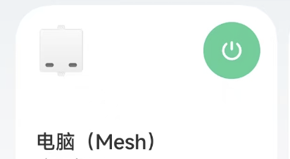
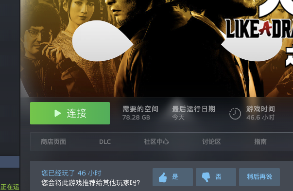
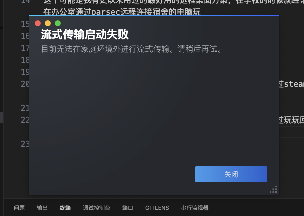
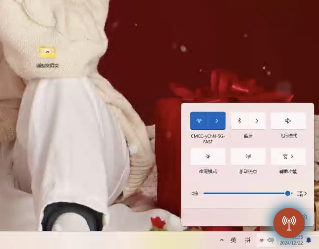
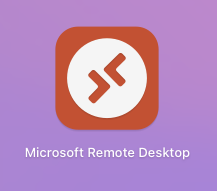
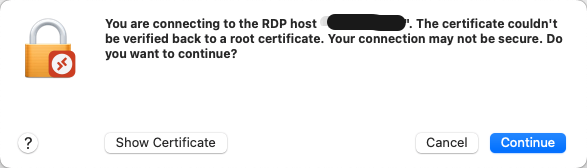
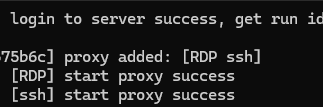
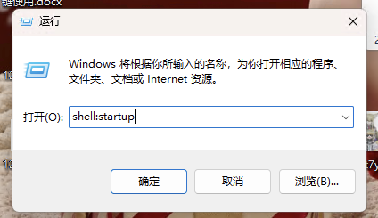
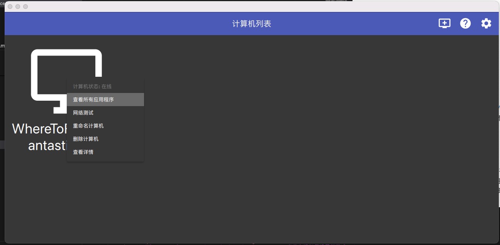
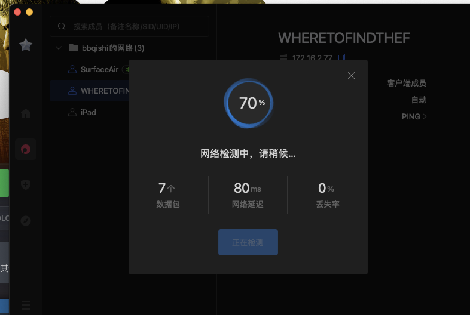

出差上班如何远程打游戏
身在南昌，想念家里的pc和如龙8 在酒店时应该如何优雅的玩游戏呢？ 那就是异地远程桌面！
如何远程开机
异地游玩，远程桌面的前提肯定是电脑能开机。 虽然可能有朋友家里的台式机从不关机，但是万一停电了需要重启遇到其他突发状况的话可能还是需要远程开机一下。
方案1
目前我用的是一个远程开机卡 这样的话可以直接把电脑的控制接入米家  开机卡的安装方式非常简单。金手指插到pcie卡槽的供电那一侧，仅从主板取电，给出的跳线接主板上原来接开机键跳线的地方，然后原来开机键的跳线插到这个开机卡的剩余两根针上。这样的话按开机键仍然可以完成原有的开机功能。 我家因为有小爱同学，可以直接买meash版本的直接接入小爱同学中。 如果没有小爱或者mesh网关的话，就需要购买wifi版本的开机卡，让他能够自主连接无线网络，就是价格会稍微多几十块钱。
方案2
如果不想往主板上插东西的话，一个哥们也给出了一个绝妙的解决方法。 就是这种远程开关，让他戳一下。然后这个开关也有自己的按钮，可以自己手动开机，就是你的手指再也接触不到原装的开机键了。 当初我们两口子和他们两口子一起吃饭的时候聊起来智能家具的事情，我们当时刚把灯的开关换成智能开关，然后我媳妇就说起我们晚上关灯的时候都不想下床去关，那哥们的媳妇立刻就说“然后你们买根长棍捅一下那个开关” 后来搞远程开机，哥们这是整了根遥控小棍，属实是喜欢棍子捅一下。
方案3
直接把主机的电源插在智能插座上，电脑设置为通电自动开机。需要关机的时候先远程桌面给电脑点了关机，然后远程关闭插座供电。需要开机的时候使插座供电，电脑自动开机。也很简单易行，就是关机时候多一道手续。
如何远程桌面
parsec
这个可能是我有史以来用过的最好用的远程桌面方案，在学校的时候就经常在办公室通过parsec远程连接宿舍的电脑玩 但是很遗憾的是parsec今年下半年开始好像挂了（被墙了）。 只得寻找新方法。（要是xdm有稳当可靠的方法还请不吝赐教）
steam流式传输
 最简单的方式，只需要远程电脑和本电脑都安装了steam就可以通过steam流式传输打开。
传输速度还可以，有的时候右下角弹这种红色的信号差的警示，不过玩玩回合制的游戏也足够了。 就是可能会出现  
公网ip转发
其他的远程方法往往需要拿到远程电脑的ip。 如果有公网ip的话无论你在哪，直接连接就好了，就像20年前父辈联机打游戏经常可以直连。 我们现在的电脑一般都是经过了nat转换，都没有公网ip，比如我现在在出差地就无法直接访问到家里电脑的ip。怎么办呢 目前我说几十块钱包了一年的华为云轻量服务器，带公网ip的，然后在家里的电脑上配置好frp的客户端 frpc，在云服务器上配置好frp服务端frps，实现一个公网ip上的转发。这样的话我在外地时，手头上电脑可以直接通过远程桌面（对，就windows那个），mac上也有微软对应开发的应用 直接连接由服务器转发出的端口即可  frp可以在github上自行下载 配置方法也很简单
公网服务器的配置
修改frps.ini 这里配置很简单，只需要填写
1 | |
然后启动脚本 ./frps -c ./frps.ini
被控机器配置
修改frpc.ini
1 | |
打个比方，如果说我云端服务器接受被控机器的端口是7777，然后我希望把原机器的远程桌面端口转发到8765端口，那么common的server_port 就填写7777，RDP中的remote_port就填写8765，然后我们手上的电脑访问服务器地址:8765即可实现远程桌面的连接。（当然是要在配置好公网服务器的情况下） 然后启动脚本 ./frpc -c ./frpc.ini  frpc启动成功后应该能看到这样的消息
windows上设置frp的开机自启
 一般是进入到如下目录 “C:\Users\用户名\AppData\Roaming\Microsoft\Windows\Start Menu\Programs\Startup” 然后在里面新建一个.bat文件，写入如下内容即可
1 | |
不购买服务器的替代方案
购买服务器毕竟要花钱，新用户第一年还便宜，之后就贵了。腾讯云、阿里云、华为云挨个薅羊毛也不过三年。一个替代方案是直接使用cpolar的免费版本进行公网ip转发，只不过免费版本的速度确实比较慢。
局域网方案
moonlight + sunshine
这个应该是一个使用人数比较多的方案 教程也很多，我就不赘述了 可以参考moonlight+sunshine串流全教程 其步骤为
- 1.被控机安装sunshine： GitHub地址：https://github.com/LizardByte/Sunshine/releases
- 2.控制机安装moonlight，这个全平台都有，不用担心mac或者linux没法玩 地址：https://moonlight-stream.org 现在至少在局域网下可以自由的玩了 
异地组网
（先默认大家没有公网ipv4吧，然后ipv6可能家里有，但是出差的地方没有啊（悲））既然刚才提到了这是局域网方案，我们在外肯定是用不了的，那怎么办呢？就是异地组网。蒲公英的免费版本允许三个设备异地组网，够我们用了，因此我们只需要在两台设备上都安装好蒲公英，然后他们就在同一个局域网下了。 
最后
当然以上的串流方式，都对网络的要求很高。外出的地点未必能满足。 延迟、稳定性都是问题。 因此如果想远程游玩最好还是玩一些回合制类对帧数要求不高的游戏。 最最最好的还是能不出门，在家宅着直接玩。